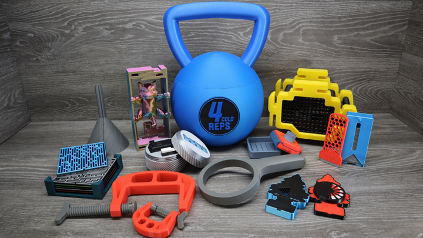

3D printing is a manufacturing process that creates physical objects by building them layer by layer from a digital model. Instead of cutting material away like traditional manufacturing, 3D printing adds material only where it is needed. This allows for the creation of complex shapes and designs that would be difficult or impossible to make using other methods. One of the most common types of 3D printing is FDM (Fused Deposition Modeling), also known as FFF (Fused Filament Fabrication). In this process, a plastic filament is fed through a heated nozzle, melted, and then deposited layer by layer to form a solid object. As each layer cools and solidifies, the next layer is added on top until the print is complete.
In this unit, you will be introduced to the Prusa MK4S 3D Printer, a high-quality FFF printer used in the makerspace. You will learn how this machine operates and how to safely prepare it for printing. You will also learn how to use PrusaSlicer, a program that converts your 3D models into instructions (G-code) that the printer can follow. Finally, you will begin to understand why it is important to design with the limitations of 3D printing in mind. Not all shapes print well, and factors like overhangs, support structures, layer height, and material properties all affect the success of a print. Throughout this lesson, you will start to learn how to design parts that are both functional and printable.